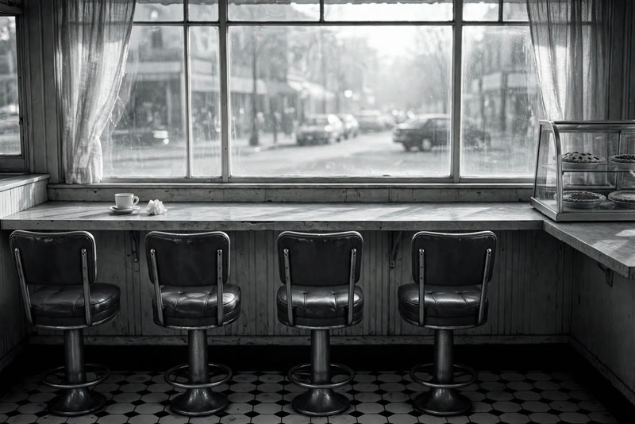
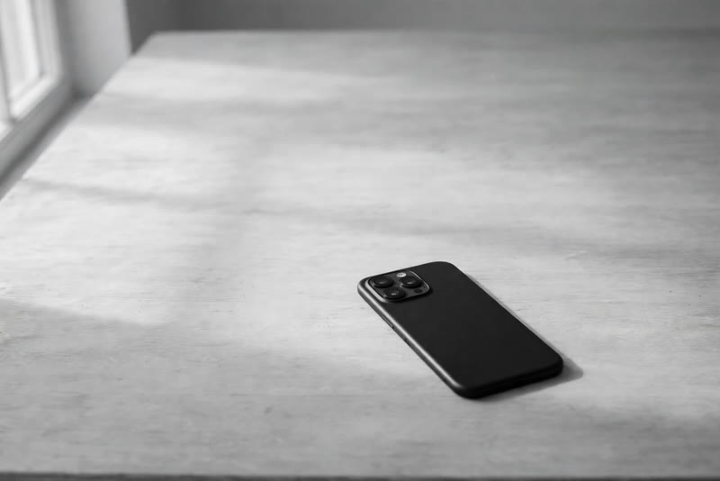

November 21, 2026
The Quiet Kind of Strong
Posted in Reflections
So this one's a little different. Most of what I write here is about getting rid of stuff, what I'm learning, or what I'm into right now. This is the first post in something I'm calling Reflections. These are the posts that come from the 2 a.m. part of my brain. They're a little darker. I'm okay with that, and I hope you are too.
The man three stools down
Picture a breakfast counter on a Tuesday. Vinyl stools, a pie case nobody touches before noon, coffee that's been on the burner since five.

The man three stools down orders what he always orders. Two eggs over medium, wheat toast, bacon extra crisp. He kids with the waitress about the Longhorns. He tips 25 percent. He's gone by 7:40.
Nobody at that counter knows he hasn't slept through the night since spring.
I used to think strong people were the loud ones. The ones with the big laugh and the firm handshake. Now I honestly think a lot of the strongest people I know are that guy. They show up. They answer the email. They hold it together in public. Then they go home and sit in the truck in the driveway for twenty minutes before they can make themselves go inside.
Nobody hands out a trophy for that. Nobody claps. But it counts. It might count more than anything else they did that day.
Getting better looks a lot like nothing
And here's the part nobody tells you. Healing is boring.
There's no movie moment. No swelling music, no sunrise over the lake where everything suddenly makes sense. Most days, getting better looks like nothing at all.
It looks like reading an old text message for the ninth time, and then, just this once, turning the phone face down on the kitchen table. It looks like eating a sandwich standing up at the counter because you know you're supposed to eat something. It looks like walking the dog around the block when every part of you wants to stay in bed.

That's it. That's the whole win for the day. Some weeks, that's plenty.
Sometimes you're grieving yourself
We talk about grief like it's always about a person. Sometimes it is. But sometimes what you're really missing is the version of you from before.
The one who laughed easier. The one who walked into a room without scanning it first. The one who honestly believed that if you worked hard and stayed loyal, people would stay too.
Life usually doesn't take that guy all at once. It wears him down. A promise here, a door closed without explanation there, until one day you notice you trust a little slower than you used to.
When I gave away almost everything before I moved to Austin, I figured I'd miss the couch. I didn't. What I missed, if I'm being honest, was the guy who bought it.
Peace over happiness
After enough hard years, what you want changes. Happiness is a fireworks show. It's loud and bright and over before you find your keys.
Peace is a porch at dusk with the ceiling fan going. Peace is falling asleep without arguing with your own head for three hours first. Peace is hearing your thoughts and not flinching.
People who haven't been through it sometimes think peace sounds boring. People who have been through it know better. They'd trade a lot of fireworks for one quiet evening.
My Buddhist practice keeps teaching me the same lesson, whether I want it or not. Everything that arises also passes. The good stuff, sure. But also the crap. Also the 2 a.m. stuff. Feelings are weather. They don't ask permission to come in, and they don't stay forever.
The recliner
I gave away my recliner when I moved. Some days I still sit in the sadness like it's that recliner.
That's the thing about pain that sticks around long enough. It gets familiar. It molds to you. You don't sit in it because it feels good. You sit in it because you know exactly how it fits. After a while, it starts to feel like part of your personality.
But it isn't. You got hurt. You are not the hurt. A wound is something that happened to you. It's not who you are.
And tired isn't the same as done. You can be completely worn out and still not be finished. Read that one twice if you need to.
Be easier on yourself
Most of us talk to ourselves in a way we'd never talk to a friend. You should be over this by now. You're behind. What's wrong with you.
But healing doesn't run on a deadline, and it doesn't go in a straight line. It's less like climbing stairs and more like the tide. In one week, out the next. A bad night doesn't erase a good month. It just means you're a person.
And from the middle of a storm, every storm looks permanent. That's just where you're standing. It isn't the truth.
What it gives back
Here's the one good thing I can say about going through it. Once you've been there, you start to notice it in other people.
The laugh that's a half-beat late. The guy who's always "good, man, real good." The tired eyes behind a perfectly normal Tuesday.
You don't have to fix anybody. Most hurting people don't need a solution. They need somebody who sees it and doesn't make them feel ashamed for carrying it.
So maybe next Tuesday, at whatever counter you sit at, ask the man three stools down how he's really doing. Then actually wait for the answer.
If you're in the middle of it
If you're reading this from inside the hard part, I'm not going to tell you it's fine. It's not fine. But it will pass. Not on your schedule, and probably not as fast as you'd like. But it will. You've already made it through every one of your worst days so far.
If you're in a really dark place, please don't carry it alone. In the US you can call or text 988, any time, day or night.
Note: I wrote every word of this one myself — AI helped with the editing, and the images are AI-generated illustrations, not photos.
More writing
- November 20, 2026
Why I gave up all my furniture — and why I'll never go back
The movers wanted $14,000–$20,000 to move my furniture from LA to Austin. I gave away 95% of it.
- November 18, 2026
Why I started this site
I retired in January and started learning to build on the web with AI. This site is where I practice.